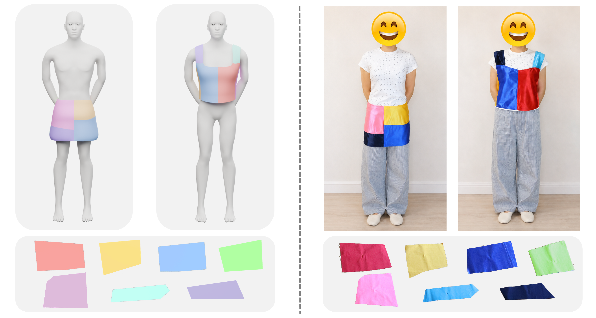
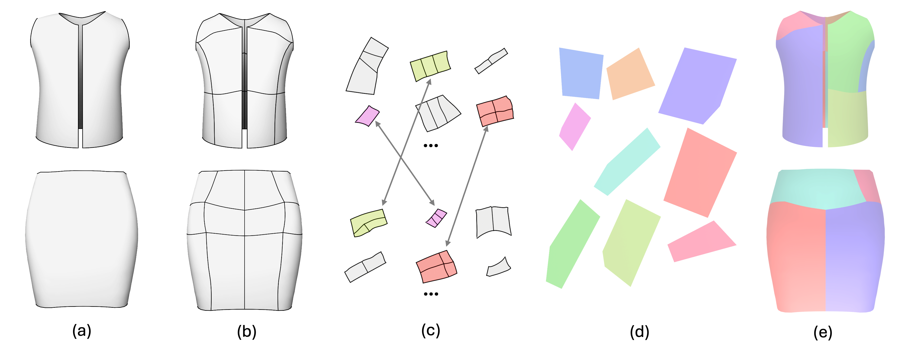

Each case shows the two original input garments, the corresponding reconfigurable garments, and the shared 2D panels.
Notes: Due to rendering differences, the colors of the 3D reconfigurable garments may differ from the colors of the 2D panels.
Computational Reconfigurable Garments
Pacific Graphics 2026, Conference Paper

Figure 1: We present a computational approach for designing reconfigurable garments, which have two different forms (top left) sewn from a common set of fabric panels (bottom left). Our designed reconfigurable garment (right) is fabricable and wearable in the real world.
Abstract
Reconfigurable garments consist of a common set of 2D fabric panels that can be rearranged and sewn into different 3D garment forms, promoting fabric utilization and extending clothing lifespans. However, designing reconfigurable garments is challenging since it is difficult to identify reusable regions across different garment forms. In this work, we present a computa- tional approach for designing reconfigurable garments, taking a pair of target 3D garment shapes as the input. Our key idea is to first identify shareable 3D regions across the target garment shapes and then represent them into a common set of 2D fabric panels. To this end, we first decompose the input garment shapes into low-distortion patches and construct candidate regions by grouping neighboring patches. We then propose a seam-aware distance metric to measure compatibility between candidate regions flattened on 2D, and formulate reusable region discovery as a combinatorial optimization problem solved through in- teger programming. Lastly, we represent each reusable region pair using a simple polygon and optimize its shape to provide a compact approximation that can be shared across the garment forms. We demonstrate that our approach is able to design reconfigurable garments with different types and forms, and validate the usability of these garments via full-scale fabrication and wearer try-on.
Pipeline

Figure 2: Figure 2: Overview of our computational approach. (a) Given a pair of input garment meshes, (b) we first generate a fine-grained patch decomposition for each garment. (c) Candidate regions are obtained by merging neighboring patches. Then we identified reusable region correspondences across garments through combinatorial optimization. (d) For each matched region pair, we model and optimize a shared polygonal panel to represent both regions. (e) The resulting shared panels, together with garment-specific assembly configurations, can be used to reconstruct both target garments.
Interactive Results
Each case shows the two original input garments, the corresponding reconfigurable garments, and the shared 2D panels.
Notes: Due to rendering differences, the colors of the 3D reconfigurable garments may differ from the colors of the 2D panels.
Acknowledgments
We thank the reviewers for their valuable comments. We also thank Xinyue Hu for serving as the fitting model, and Fei Wang and Chunjie Gao for their assistance with sewing. This work was supported by the Singapore MOE AcRF Tier 2 Grants (MOE-T2EP20123-0016).